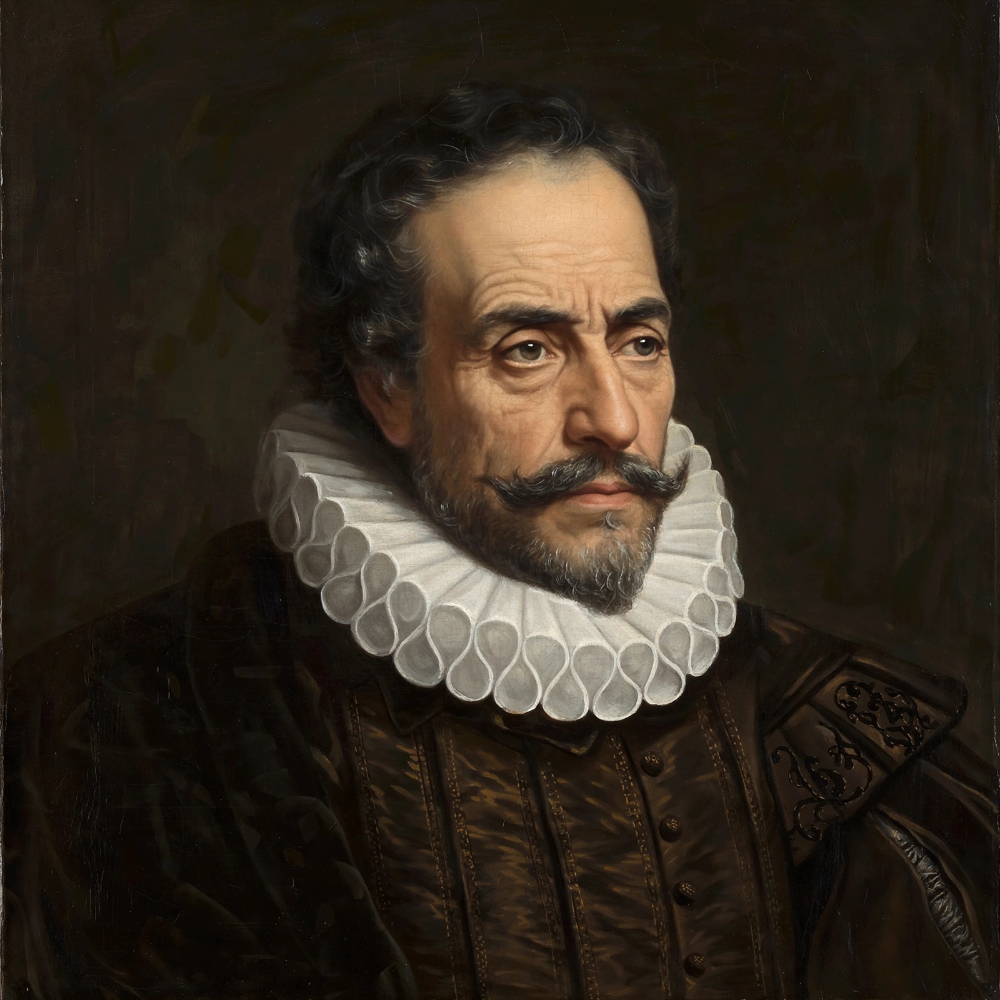

Spanish literature generally refers to literature written in the Spanish language, including works composed in the territories that now form modern Spain and the Spanish-speaking world. Its Golden Age (Siglo de Oro) produced Miguel de Cervantes, whose Don Quixote (1605, 1615) is often called the first modern novel, and the dramatists Lope de Vega and Calderón de la Barca. Spanish literature also includes works in Catalan, Galician and Basque, and is closely entwined with the literature of Spanish America.
| Language | Spanish (Castilian) |
|---|---|
| Earliest epic | Cantar de mio Cid (c. 1200) |
| Golden Age | Siglo de Oro (c. 1492–1681) |
| Supreme classic | Don Quixote by Miguel de Cervantes |
| Major figures | Cervantes, Lope de Vega, Calderón, Góngora, Lorca |

The earliest Spanish literature mingled Christian and Muslim influences: the jarchas, Romance refrains appended to Arabic and Hebrew poems, are among the oldest lyric fragments in Europe. The great epic Cantar de mio Cid (c. 1200) celebrates the Castilian hero Rodrigo Díaz de Vivar. Gonzalo de Berceo wrote devotional verse; Alfonso X sponsored learned prose; Don Juan Manuel's Conde Lucanor (1335) and the Archpriest of Hita's Libro de buen amor mark the fourteenth century, and Jorge Manrique's Coplas por la muerte de su padre (1476) is the supreme medieval elegy. Fernando de Rojas's La Celestina (1499) bridges the medieval and Renaissance worlds.
Renaissance lyric flowered with Garcilaso de la Vega and the mystics St John of the Cross and St Teresa of Ávila. The anonymous Lazarillo de Tormes (1554) invented the picaresque novel. Cervantes's Don Quixote transformed fiction. Drama reached an extraordinary peak in Lope de Vega, credited with hundreds of plays, and in Tirso de Molina (creator of Don Juan) and Calderón de la Barca (Life Is a Dream). Poetry divided between Góngora's ornate culteranismo and Quevedo's wit-laden conceptismo; prose reached its height in Baltasar Gracián.
After a quieter neoclassical eighteenth century, Romanticism arrived with the Duque de Rivas's Don Álvaro (1835), the poetry of Espronceda and Bécquer, and José Zorrilla's Don Juan Tenorio (1844) — still performed every All Saints' Day. The realist novel flourished in Benito Pérez Galdós (Fortunata y Jacinta), Leopoldo Alas "Clarín" (La Regenta) and Emilia Pardo Bazán.
The Generation of 1898 (Unamuno, Machado, Valle-Inclán) responded to Spain's imperial loss; the Generation of 1927 produced the poets of the Silver Age, above all Federico García Lorca, whose plays Blood Wedding, Yerma and The House of Bernarda Alba and whose murder in 1936 opened the Civil War. Postwar literature developed under Franco's censorship — Camilo José Cela (The Hive) and Miguel Delibes — and expanded after 1975 into a plural democracy, while filmmaker Luis Buñuel, Lorca's friend, carried the surrealist strain into cinema. Nobel laureates include José Echegaray, Jacinto Benavente, Juan Ramón Jiménez, Vicente Aleixandre and Cela.